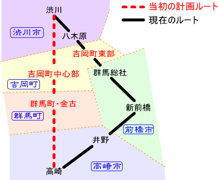
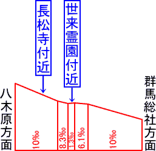

| どうしてこんな事に… ～吉岡町で起こった駅設置反対運動～ |
|||||||
| 撮影中、地元のお年寄りとの立ち話で得た内容をもとに書いてみました。 群馬県に北群馬郡吉岡町という町がある。榛名山の南東山麓と利根川流域に展開した都市近郊型農村で、群馬総社駅のある前橋市と八木原駅のある渋川市に挟まれた地勢になっている。そんな農村風景あふれる町で、町東部を走っている上越線の撮影をしていた。すると、吉岡町在住という散歩中の老人に声をかけられ、撮影そっちのけで話し込んでしまう機会があった。私が上越線のファンである事を伝えると、昔の上越線の話をいろいろと語ってくれた。季節は夏至の頃で、日が落ちる時間が早い他の季節では狙えない夕闇の中の下り一番貨物列車を撮影しようと狙っていた。しかし、「また来りゃいいや」と心の中でつぶやかせるほどの内容だったのを今でも覚えている。1つ1つが初めて聞く話ばかりで驚きの連続だったが、その中で特に興味深い話があったので書き記しておきたいと思う。 ここで最初に確認しておきたいのは、上越線の建設が決定した当初の計画ルートでは、高崎駅で信越線と分岐した上越線はそのまままっすぐ北進し、群馬郡群馬町（現在は高崎市）と吉岡町の中心部を経由して渋川へと抜けるというものだった。しかし、県都・前橋を経由しない事に猛抗議した前橋市側の運動により、計画当初の「群馬町・吉岡町ルート」は覆され、現在のルートに変更となる（図1）。この事に対して群馬・吉岡両町からも異議が唱えられたであろうが、現在のルートを見る限りでは前橋市側の意見が通ったという事になる。 （注：上越南線が建設され始める大正8年頃、群馬町・吉岡町ともにもっと小さな村・町単位の自治体だったので、現在と町村名や町村境が全く違う。また平成の大合併により群馬町は高崎市になっている。） |
|||||||
 <図1 当初計画ルートと現ルートの比較略図> |
 <図2 線路縦断面略図> |
||||||
| ここからがさきほどの老人の話になるのだが、上に書いたような経緯でルート変更となった上越線は、吉岡町の中心部（当時は明治村）からは外れているものの、町の東部（当時は駒寄村）を横切っているので、そこに駅を設置する計画があったそうだ。計画ルートが変更されて明治村を通らなくなったものの、距離的にわずかである隣接の駒寄村に駅を設置するよう当時の建設当局が気を利かせたのかもしれない。 しかし、その予定していた場所というのが問題だった。その場所というのが「墓地」の近くで、その墓地に先祖代々を祀っている人々から「駅ができると先祖の永眠を妨げる」という理由で反対意見がだされたそうである。しかも運悪くその墓地の所有者の中に有力な代議士がいたそうで、その代議士を筆頭にこの反対運動がどんどん推し進められ、とうとう駅設置の計画が撤回されてしまったそうだ。さらに困ったことに、駅設置場所の代替案の検討はされず、上越線はそのまま駒寄村を素通りするだけという結果になってしまう。駅間が短い（約2.5Km）という不利があるにも関わらず駒寄村に駅を設置しようと配慮したのに、期せずして反対運動が起きたので、建設当局は「シメタ」と思って代替案を検討しなかったのかもしれない。 ここで、この「墓地」というのがどの辺りの事なのか気になったので、現在の地図で調べてみた。さきほどの老人が「小学校の方」と言っていたので、
さらに、この付近の線路縦断面図を調べてみた（図2）。すると、前者のお寺の付近は10‰の勾配の途中である事が判明した。現代においては、新設される駅が勾配途中に設置される例はよくあるものの、蒸気機関車全盛の大正期、路線開業と同時に誕生する駅がこのような勾配途中に検討されるというのは疑問点が残る。 次に、後者の霊園付近の勾配を調べてみた所、群馬総社駅付近から続く上り10‰の勾配が、この手前で6.1‰になり、ちょうどこの霊園の辺りで1.3‰に緩和されていた。そして、わずかな区間だけこの勾配が続いた先は、8.3‰となり、そのすぐ先で再び10‰の勾配となっている。 この事を考えると、後者の霊園付近の緩やかな勾配の辺りに、駅設置の計画があったと考えるほうが自然だと思う。しかし、もし当時にこの霊園が存在していなかったら、老人の言う「墓地」というのが前者のお寺付近のみという事にもなる。いずれにしても、駅設置の計画があったのがこの辺り一帯だという事は間違いないと思われる。 ところで、この辺り一帯は利根川に向かって洪積台地が広がっており、ちょうど小さな山（丘）のようになっているのだが、わざわざそれを登らなくてもわずかに利根川の方へ迂回すれば「ほぼまっ平ら」な田園地帯を通り抜けて八木原駅まで到達し、もう少し緩やかな勾配に出来たはずである。 しかし、上越線のルート変更によって生じた明治・駒寄両村への不便を解消する為に、勾配の面で不利があるにも関わらず、少しでも両村の中心部に近くなるこの小さな山の部分を経由する事にしたのかもしれない。そのうえ、駅の設置予定場所付近の勾配を緩やかにする措置までとったにも関わらず、予想だにしなかった反対運動で駅の設置計画が撤回されてしまった為、駅予定地の緩やかな勾配だけ残る結果になってしまったのではなかろうか。しかし、このような駅設置撤回の決定が下されたあと、なぜ、現ルートよりも勾配が緩やかであろう「ほぼまっ平ら」な利根川寄りの田園地帯を迂回する措置がとられなかったのか疑問が残る。駅設置中止の決定が下った時、すでにこの区間の土地買収や工事が終了していて変更がきかなかったのであろうか。いずれにしても、駒寄村で沸き起こったこのような「駅設置反対」という運動の結果、明治・駒寄両村の合併で誕生した現在の吉岡町も上越線に素通りされているのは事実である。 それにしても、鉄道の開業に際して駅誘致の陳情ならまだしも、駅設置反対という運動があったのいうのは、自分の無知もさる事ながら意外だった。駅設置反対運動は全国各地で結構あったようである。結果、上越線に素通りされるだけになってしまった吉岡町が気の毒でならないが、この「駅設置反対のてん末」を語ってくださった吉岡町在住の老人が、この話をしている時だけ腹立たしく話していた。 「どうしてこんな事になっちゃったんだろうなぁ」。目を細めながら遠くを見つめる老人が発した一言が、今でも印象に残っています。 (補足）…ここ数年来、吉岡町内の上越線部分に新駅を設置するよう、吉岡町として関係各所に働きかけているそうです。 |
|||||||
| ↑このページの先頭へ↑ | |||||||
|
|||||||

真夏の風＞上越線あれこれ＞このページ